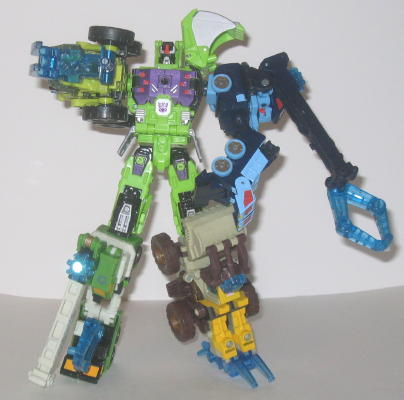
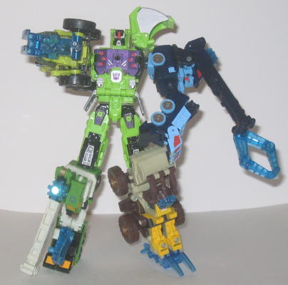

Difficulty of Transformation : Medium
Rating : 7.9
Steamhammer, the leader
of the Energon Constructicons and the 'bot who forms the torso of their
gestalt, Constructicon Maximus, has a vehicle mode of a steam shovel. Or...
some kind of construction vehicle close to it, anyways. I'm not too fond
of this mode, namely because it suffers from Steamhammer's gestalt combination.
There aren't any robot extras per se, with the sole exception of the bottoms
of the robot feet on the top of the vehicle mode, and those are easily
overlooked. However, there's all these pegs and bolts and hinges popping
out of the vehicle mode everywhere, it really detracts from the look. It's
especially bad when you look at the sides of the main body of the vehicle.
Also, the legs don't quite fold up into the cramped position they're supposed
to stay in in this mode-- the knees tend to stick out a little from the
back, and because of this, the first time you transform him into vehicle
mode, you'll swear you aren't doing it right, but that's how he transformed--
it adds to the haphazard look of the mode, and it really should have been
fixed before the toy was released. This problem is also exacerbated by
the fact that it makes the rear end of the vehicle actually droop down
a little bit, which I don't have to tell you looks bad. The actual shovel
part of the arm is also really big proportionally when compared with the
short upper part of the vehicle arm. Because of this, it's hard to imagine
Steamhammer actually scooping up anything in this mode. I'm also not a
fan of the red windows-- they look gaudy. At first I wasn't too crazy about
the really small treads, but they are this way on the actual real-life
vehicle, and Steamhammer still manages to stay balanced, so I guess there's
no problem with it. Steamhammer's Decepticon spark crystal is on the inside
of his shovel, and his blue Powerlinx symbol is on the left side of his
vehicle mode (in the later versions; the earliest version doesn't have
this symbol).
Steamhammer's robot
mode, on the other hand, is pretty good. His overall proportions are pretty
good, and his articulation is top-notch; with the sole exception of the
head, he can move at any point you can reasonably expect on a deluxe-sized
toy, so you can get him into a heck of a lot of poses. Some people don't
like his shovel-arm, but I don't mind it. It gives him a "strongarm" appearance,
and I can easily see him kickin' some Auto-butt with that thing. The treads
behind his head also blend in with the overall structure of the mode as
well, so I don't mind those either. The vehicle mode cockpit does just
stick out from behind his right shoulder, however, and it doesn't add anything
to the robot mode-- so Steamhammer has a touch of annoying kibble there,
but that's really about it. On the color side, I really like Steahammer's
overall scheme-- it's appropriately reminiscent of the G1 Constructicons,
what with the green and purple, but it manages to add a few other colors
into the mix, like silver and black. It all comes together really well.
He's also got a ton of paint detailing on his chest and legs, and I love
love loove that metallic purple color he has there. He also has plenty
of mold detailing, like hinges, bolts, and pipes, especially on his chest--
it really looks awesome. I'm also fond of his robot head design, as it
looks like he has a shovel for a forehead, and his wide face gives him
a stern, no-nonsense look. He does have light piping for the eyes, but
unfortunately, the transparent plastic is too dark for it to work well.
Steamhammer has a very
nice robot mode, but a pretty sloppy and toy-ish vehicle mode. Still, I'm
a bit more forgiving here than if this were a stand-alone toy, seeing as
how he transforms into the torso of a gestalt, as well. Mildly recommended.
 Constructicon
Maximus (Combination of Steamhammer, Wideload, Duststorm, Bonecrusher,
and Sledge)
Constructicon
Maximus (Combination of Steamhammer, Wideload, Duststorm, Bonecrusher,
and Sledge)

Difficulty of Transformation
: Medium
Rating
: 7.9
Constructicon Maximus
really should have been named Devastator Maximus, not only 'cause it sounds
cooler, but because it's what the G1 gestalt formed from a bunch of Constructicon
vehicles was called, and the same basic idea is being applied here. But
anyways, Constructicon Maximus has some ups and downs when it comes to
his overall structure. Steamhammer forms a pretty solid main body; no weak
pegs holding stuff together, or anything of the sort. The hip joints on
mine are a tad floppy under the extra weight, but my Steamhammer is from
one of the first batches made, so this could just be an early production
flaw. The gestalt head doesn't really peg into anything, though; it's just
in between these two plastic pieces behind the chest, and tends to wobble
a little without really staying in one spot. It's a little annoying, needless
to say. The gestalt head also looks kinda odd, too-- it's really... square.
The overly large "eyebrows" also don't look too hot, though I do love the
gas-mask-like mouth-- he shares that in common with his fellow gestalt,
Bruticus Maximus
. The large shovel-shoulder
also really looks cool. The
Bonecrusher
/
Sledge
mold makes a great leg or arm, and the claw Energon weapon that comes with
the mold also looks good as either a hand or foot. Though the way that
the shovel pretty much engulfs Constructicon Maximus' lower leg I'm not
entirely fond of. The
Duststorm
/
Wideload
mold, however, looks pretty bad no matter what appendage it is in the gestlat
form. As a leg, it's pathetically skinny when compared to the Bonecrusher/Sledge
mold, and the crane and Energon claw just sorta hang off the front end
unceremoniously. As an arm, it's a little better, though if you want to
swing out the crane arm to make the main body of the crane look like the
arm, it does tend to make the crane arm a pretty big extra, even if it
means that Constructicon Maximus can bend his arm sideways at the elbow
in this configuration and gets a little nifty claw made out of the front
of the crane mode. If you keep the crane arm attached completely to the
main body, however, it doesn't look like an arm at all, just a couple of
connected parts with a claw attached on the end of them, so I recommend
the arm configuration pictured above for the Wideload/Duststorm over the
one explained in the official instructions. On the upside, though, Constructicon
Maximus has pretty good articulation for a gestalt; he can move at the
waist, head, hips (at two points), knees (at two points), and shoulders
(at two points). His individual members' colors also work reasonably well
together, with the sole exception of Bonecrusher's yellow, which I still
say is too bright.
Constructicon Maximus
is a decent gestalt, though not as good as Bruticus Maximus, mainly because
the Duststorm/Wideload mold makes a poor appendage. Mildly recommended.
No Stats
Reviews by Beastbot